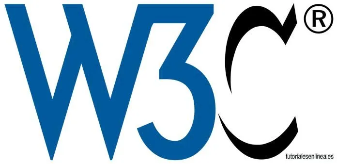

Estandares W3C
¿Qué es?
W3C (World Wide Web Consortium) es la organización principal que establece las normas y recomendaciones, las cuales definen como debe funcionar las tecnologias web.
Logo

Imagen Extraida de https://acortar.link/Ldqyw4
Objetivo
El objetivo de los estandares W3C es garantizar la accesibilidad, compatibilidad e interoperabilidad entre navegadores y dispositivos.
Principales estándares
HTML, CSS, XML
WCAG (Directrices de accesibilidad)
DOM (Modelo de Objetos del Documento)
Quienes Son
El consorcio está compuesto por un grupo de programadores, desarrolladores web, ejecutivos de la industria y usuarios que ayudan a definir las especificaciones para el desarrollo de la tecnología web.

Tomado de: https://acortar.link/jfjvK9